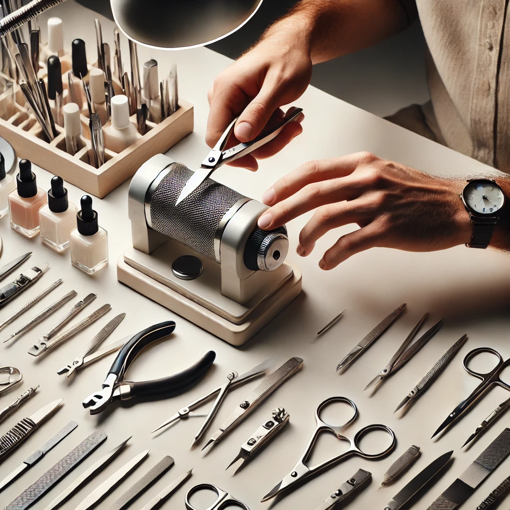

Почему стоит обращаться к профессионалу для заточки инструментов.
Инструменты для маникюра и педикюра — это не просто рабочие инструменты, а ключевые элементы, от которых зависит качество и безопасность предоставляемых услуг. Ножницы, кусачки, пилки и другие аксессуары требуют регулярной заточки, чтобы выполнять свою работу максимально эффективно. Однако многие мастера пренебрегают этим, пытаясь точить инструменты самостоятельно или вовсе откладывая эту задачу. Важно понимать, что правильная заточка требует не только профессиональных навыков, но и специализированного оборудования. В этой статье мы рассмотрим, почему лучше доверить заточку инструментов профессионалу, а не заниматься этим самостоятельно.
Острота вашего инструмента - это ваш комфорт в работе и довольные клиенты, которые возвращаются к в и рекомендуют Вас как лучшего специалиста на рынке.
Острота инструментов играет ключевую роль в выполнении маникюра и педикюра. Во-первых, острые инструменты обеспечивают точность и аккуратность выполнения процедур, что непосредственно сказывается на результате работы. С их помощью мастер может легко удалить кутикулу, обрезать ногти и обработать огрубевшую кожу, не причиняя дискомфорта клиенту. Во-вторых, острые инструменты гарантируют безопасность процедуры. Тупые лезвия могут не разрезать, а рвать кожу, что повышает риск микротравм и инфекций. Даже малейшая ошибка, вызванная недостаточно острыми инструментами, может привести к неприятным последствиям, таким как воспаление или заражение. Наконец, использование тупых инструментов может существенно снизить эффективность работы. Процесс становится более трудоемким и длительным, что отрицательно сказывается на репутации мастера. Клиенты, почувствовав дискомфорт, вряд ли захотят вернуться повторно.
Преимущества профессиональной заточки
Заточка инструментов — это процесс, требующий точности и понимания особенностей каждого инструмента. Профессионалы, занимающиеся заточкой, обладают не только необходимыми знаниями, но и специализированным оборудованием, которое позволяет выполнить работу качественно. Точность и качество работы. Профессионалы используют специализированные станки, которые обеспечивают идеальный угол заточки, соответствующий конструкции инструмента. Это гарантирует, что инструмент будет служить долго и не потеряет своих рабочих качеств после нескольких применений. Знания и опыт. Мастера, занимающиеся заточкой, знают все тонкости процесса: от выбора правильного угла заточки до особенностей материалов, из которых изготовлены инструменты. Это позволяет избежать ошибок, которые могут привести к порче инструмента или снижению его функциональности. Продление срока службы инструментов. Правильная заточка не только возвращает инструментам их первоначальную остроту, но и помогает продлить их срок службы. Профессионалы знают, как правильно ухаживать за инструментами, что позволяет минимизировать износ и увеличить срок их эксплуатации.
Опасности самостоятельной заточки.
Многие мастера решают экономить на профессиональной заточке и пробуют точить инструменты самостоятельно. Однако такой подход часто приводит к плачевным результатам. Во-первых, без специализированного оборудования и знаний сложно добиться нужного угла заточки, что может привести к повреждению инструмента. Неправильная заточка может сделать инструмент бесполезным, так как он не будет выполнять свою функцию должным образом. Во-вторых, самостоятельная заточка может стать причиной травм. Использование некалиброванных заточных станков или подручных средств часто приводит к тому, что лезвие становится неровным или слишком острым в определенных местах, что повышает риск порезов и других травм как для мастера, так и для клиента. Наконец, самостоятельная заточка отнимает много времени, которое можно было бы потратить на обучение новым техникам или обслуживание клиентов. В результате, попытка сэкономить оборачивается потерей времени и денег, особенно если инструмент был испорчен и его нужно заменить.
Профессиональная заточка инструментов для маникюра и педикюра — это не роскошь, а необходимое условие для качественного и безопасного обслуживания клиентов. Обращение к специалисту гарантирует, что ваши инструменты будут заточены правильно, что позволит вам работать с уверенностью и обеспечивать высокий уровень сервиса. Не рискуйте своей репутацией и безопасностью клиентов — доверьте заточку инструментов профессионалу. Таким образом, вы не только сэкономите время и деньги, но и обеспечите долгую и эффективную работу своих инструментов, что в конечном итоге приведет к удовлетворению ваших клиентов и укреплению вашего бизнеса.
Коментарии
Master Sharping
Обращение к профессионалу для заточки инструментов — это не просто вопрос удобства, а гарантия качества и долговечности вашего оборудования. Мастер, обладающий специализированными навыками и опытом, знает тонкости обработки разных материалов, углы заточки, и правильные методы работы с каждым конкретным инструментом.
Категории
Лучшие коментарии
Тут будут лучшие коментрарии, как только вы решите какие именно